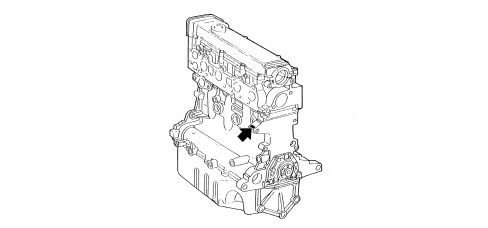

ENGINE MARKING POSITIONING
- Path
- Technical Data > CAR GENERAL FEATURES > IDENTIFICATION PLATES > ENGINE MARKING POSITIONING
- Kind
- technical data / specifications
- Applies to
- all engines; all production periods
- Interactive page
- https://sloeber94.github.io/elrnDB-fCrm/en/#/194001803
Applies to: all engines; all production periods
1.8 engine
The engine marking is stamped on the cylinder block/crankcase, gearbox side, near the engine oil filter.

2.2 engine
The engine marking is stamped on the flat part of the engine oil filter case.

1.9 Multijet 8v engine
The engine marking is stamped on the cylinder block/crankcase, gearbox side.

1.9 Multijet 16v - 2.4 Multijet 20v Engine
The engine marking is stamped on the cylinder block/crankcase, gearbox side.